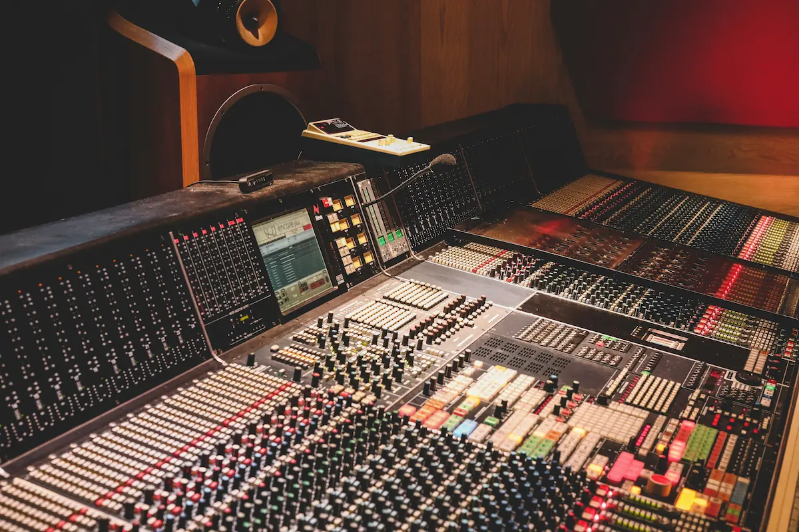

GRABACIÓN
Elementos del proceso de grabación.
Ver más >Un home studio es un entorno de trabajo acústico y digital adaptado para registrar, editar y finalizar proyectos sonoros con estándares de calidad profesional desde un espacio personal.
Para lograr una obra musical sólida de principio a fin, el flujo de trabajo en este espacio se articula a través de tres pilares indispensables: la captura precisa mediante la grabación, el desarrollo sonoro y creativo en la producción, y el control acústico crítico a través de la monitorización.
Elementos del proceso de grabación.
Ver más >Software en el proceso de producción.
Ver más >Control de la mezcla y calidad.
Ver más >Gracias al avance tecnológico, hoy es posible prescindir de las grandes consolas analógicas tradicionales y concentrar una cadena de audio completa en un ordenador equipado con el hardware adecuado.
